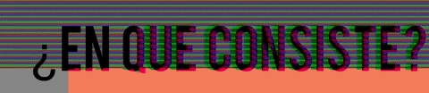
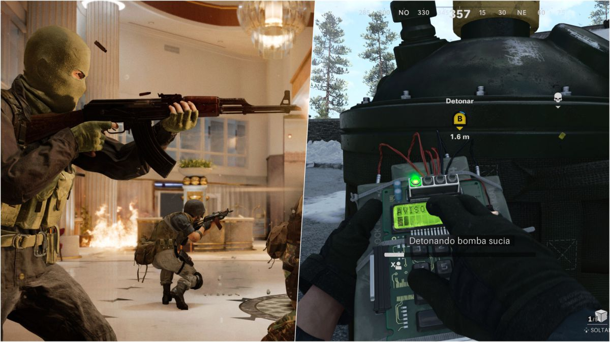
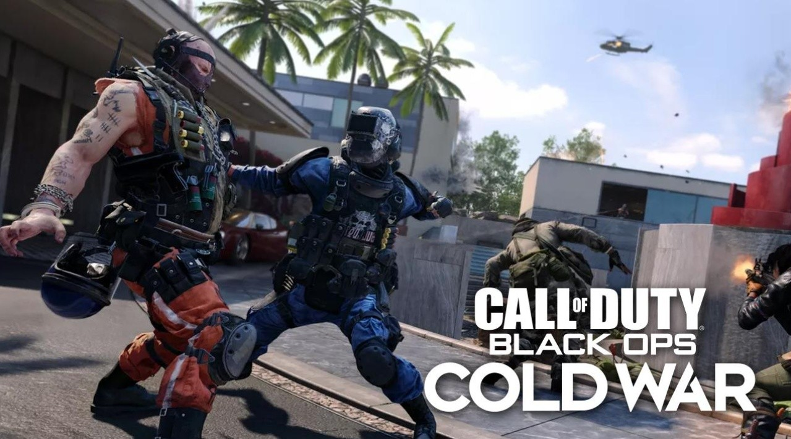
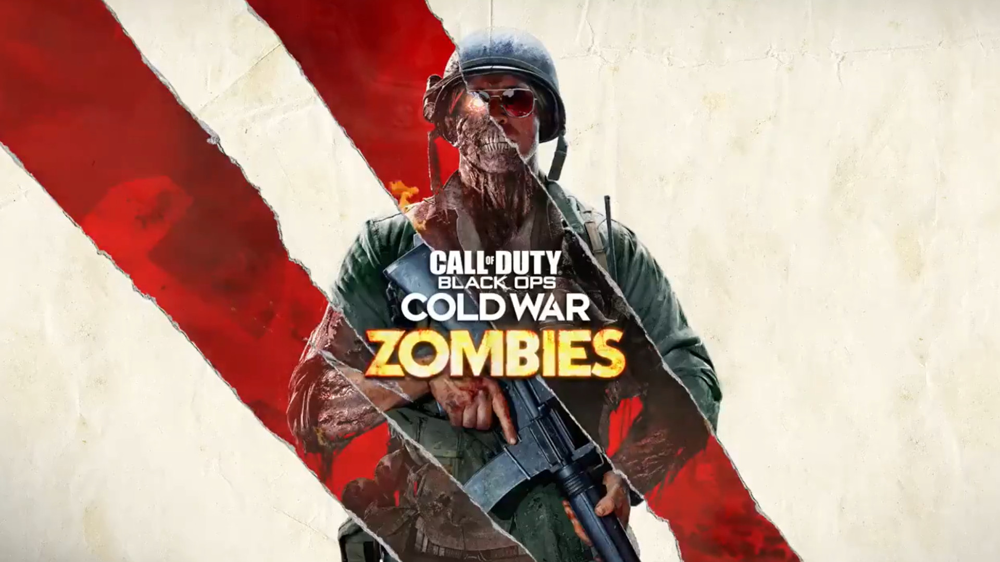
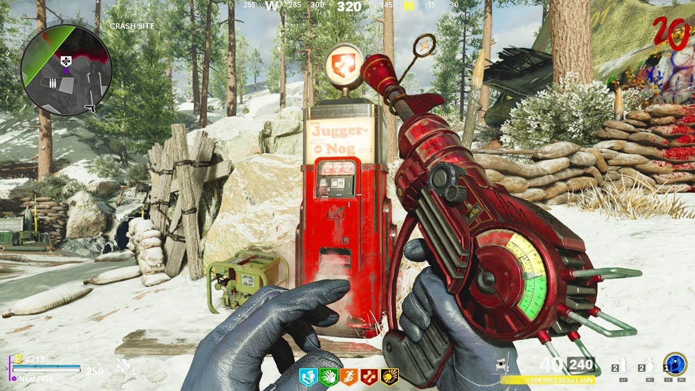
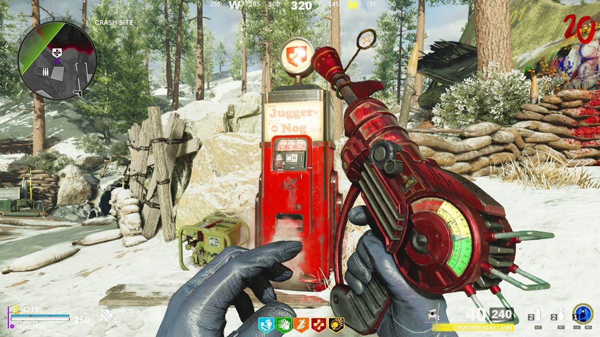

  
Zombies:
Consiste en varios aspectos, debido a que tienen muchos modos de juego como Multijugador, Zombies, Modo Historia y battle royale, Cold War es el primer juego de la saga de Call Of Duty en tener conexion con otros titulos independientes como: Modern Warfare y Warzone, Cold War consiste en poder entrar a la epoca de la Guerra Fria, esto me parece muy interesante debido a que puedes aprender cosas nuevas a traves de jugar, es interesante ya que puedes saber que sucesos ocurrieron en la guerra fria y entender cosas del pasado.
Multijugador: El multijugador tiene muchisimos distintos modos de juego, esta el modo de juego de Buscar y Destruir, en este modo de juego consiste en que dos equipos de 5 personas, un equipo tiene que plantar una bomba en cualquiera de las dos distintas zonas la zona A y la zona B, la responsabilidad del otro equipo es evitar que planten la bomba, si el equipo planta la bomba tienen que desactivarla antes de que explote para ganar la ronda y son 6 rondas, a la 3 ronda cambian los roles ahora al equipo que le tocaba descativar tiene que plantar la bomba.
Modo de juego Dominio, este es mi modo favorito consiste en que hay tres zonas en el mapa: Zona A, Zona B y Zona C y se divide en dos periodos, los dos equipos tienen que la mision de capturar las zonas, la zona que regularmente siempre esta en lucha es la Zona B los equipos tienen que caputrarla para poder hacer puntos y ganar la primera ronda, son partidas muy intensas y divertidas.
  

Modo Historia:
Los jugadores asumen un personaje personalizado, con nombre en codigo "Bell", con la capacidad de elegir su agencia de inteligencia, tono de piel, nacionalidad y genero; asi como diferentes rasgos de personalidad que brindan ventajas en el juego. Presenta multiples finales, dependiendo de la eleccion del jugador a lo largo del modo historia.